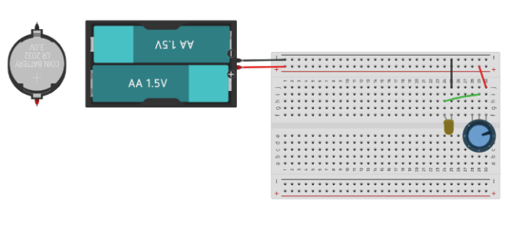
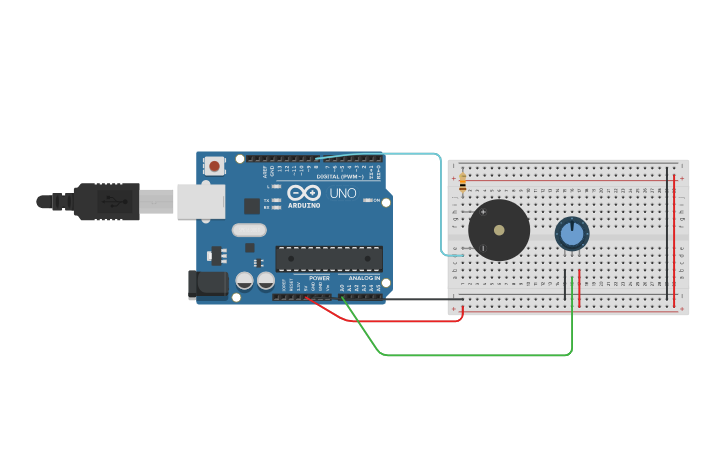
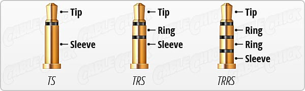
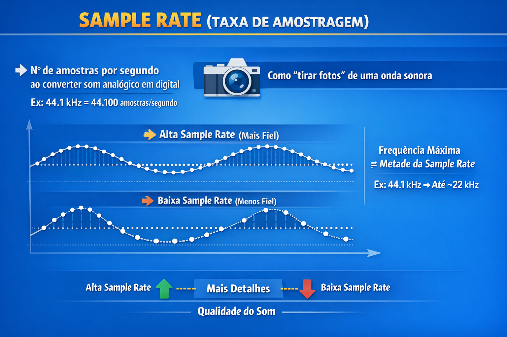
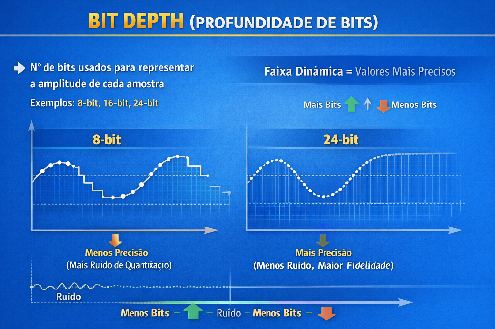

A partir da imagem abaixo, descreva o experimento que fizemos para entender as propriedades básicas da eletricidade: Tensão, Corrente e Resistência.

a) A partir do desenho abaixo, descreva os experimentos sonoros que fizemos com Arduino e compartilhe seu entendimento sobre a diferença entre eletrônica analógica e digital a partir desta experiência.
b) Descreva detalhes do funcionamento da placa de protótipo (protoboard) e as diferenças práticas que você observou em seu uso, tanto no simulador quanto na prática presencial.


A partir dos esquemas abaixo, descreva seu entendimento sobre os conceitos de Sample Rate e Bit Depth no processo de digitalização de ondas sonoras.

